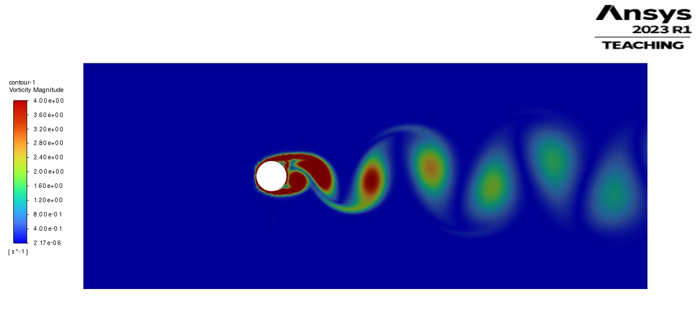
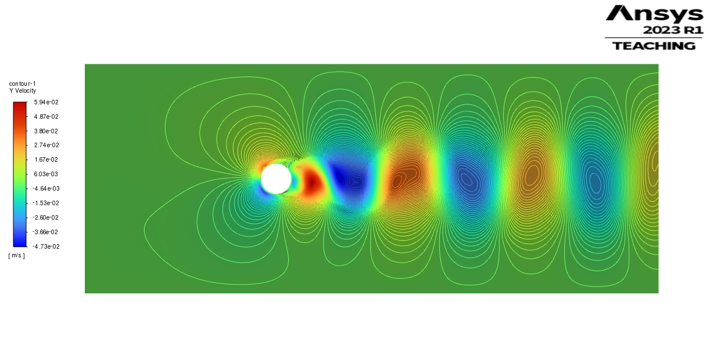
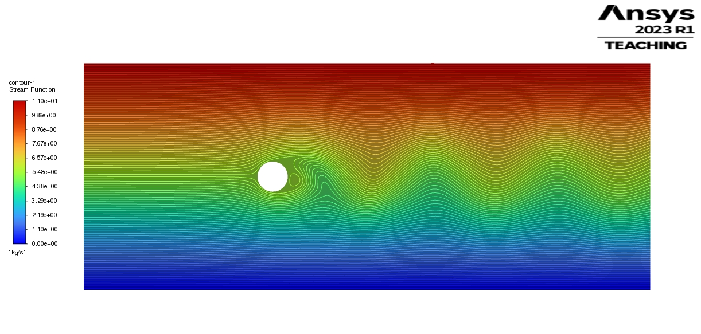
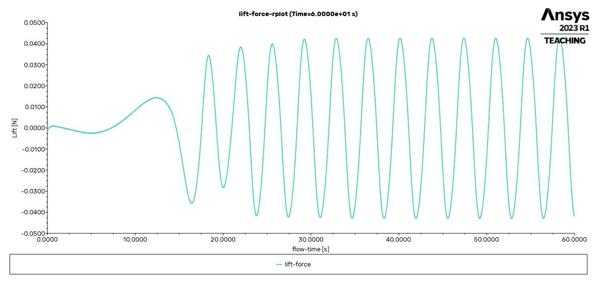

Flow Over Cylinder — Vortex Shedding (2D)

Objective. Resolve the unsteady wake and quantify the lift oscillation for a 2D circular cylinder.
Problem setup. Diameter D = 0.04 m, inlet velocity U = 0.05 m/s, fluid ρ = 730 kg/m³, μ = 0.0024 kg/(m·s). Computed Reynolds number: Re = ρUD/μ ≈ 608.
Model & Numerics
| Domain & BCs | 2D channel; velocity inlet (U=0.05 m/s), pressure outlet, no-slip cylinder |
| Fluid properties | ρ = 730 kg/m³, μ = 0.0024 kg/(m·s) |
| Reynolds number | Re = 608.33 |
| Mesh size | ≈ 55,969 elements; ≈ 56,521 nodes |
| Time stepping | Δt = 0.05 s, 1200 steps (total 60 s), ≤ 60 iters/step |
| Solver | Transient, pressure-based; second-order in time |
Key Results
| Lift oscillation amplitude (late time) | ≈ 0.04275 N |
| Oscillation period | ≈ 3.65 s (from 51.05 s – 47.4 s) |
| Shedding frequency | f ≈ 1/3.65 ≈ 0.274 Hz |
| Strouhal number | St = fD/U ≈ 0.274×0.04/0.05 ≈ 0.22 |

Y-velocity with streamline overlays at t = 60 s — clear alternating cross-stream jets of the von Kármán street.

Stream function contours — smooth outer flow with periodic recirculation bubbles in the wake.
Vorticity magnitude at t = 60 s — alternating high-vorticity cores convect downstream.

Lift force vs time — amplitude and period measured in the fully developed region (≈ 30–60 s).
Takeaways. The simulation reproduces canonical vortex shedding behavior at Re≈600. The measured Strouhal number (~0.22) is consistent with literature for sub-critical Re, and the force history shows clean, periodic behavior after initial spin-up.
Next step. Convert lift to CL using dynamic pressure and span, and probe grid/time-step sensitivity to quantify uncertainty.